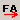

Guide Rapide
Ce guide vous donne un aperçu rapide sur la façon d'utiliser FileZilla. Par défaut, vous n'avez pas à configurer FileZilla, et vous pouvez donc commencer à travailler directement avec le programme.
1. Connexion à un serveur FTP
Pour vous connecter à un serveur FTP, entrez l'adresse du serveur dans la champ de texte Adresse de la barre de Connexion Rapide. S'il s'agit d'un serveur particulier comme un serveur SFTP, ajoutez le protocole au début de l'adresse. Dans le cas d'un serveur SFTP, démarrez l'adresse avec 'sftp://'. Entrez le port du serveur dans la champ Port si ça n'est pas un port par défaut (21 pour FTP, 22 pour SFTP). Si les Nom d'utilisateur/ Mot de passe sont requis, entrez les dans le champ approprié. Cliquez sur Connexion rapide ou appuyez sur Enter pour vous connecter au serveur.

2. Parcourir le serveur
Après une tentative de connexion réussie, une liste des fichiers et dossiers apparaît dans le cadre de droite de la fenêtre principale. Le dossier actuel est listé dans la champ d'édition du haut. Vous pouvez changer de dossier actuel en double-cliquant sur un dossier ou en entrant le nom du dossier dans le champ et en appuyant sur Enter. Vous pouvez aussi faire un clic droit sur un dossier de la liste et sélectionner Ouvrir dans le menu contextuel pour changer de dossier actuel. Vous remarquerez un dossier ".." affiché dans tous les cadres de répertoires. Ce dossier vous permet de remonter au dossier parent du dossier actuel.

3. Parcourir votre machine
Parcourir votre machine se fait de la même
façon que pour le serveur. Il n'y a qu'une seule différence: les
dossiers de votre machine sont agencés sous forme d'une arborescence
pour un parcours plus rapide. Une arborescence est également disponible
pour le site distant, mais elle est cachée par défaut. L'arborescence
distante peut être affichée à tout moment en cliquant sur
l'icône d'arborescence distante  de la barre d'outils.
de la barre d'outils.
Pour changer le dossier actuel, aussi bien sur votre machine que sur le serveur,
sélectionnez simplement un élément dans l'arborescence
appropriés.

4. Transférer des fichiers
Vous pouvez envoyer sur le serveur ou recevoir un fichier en double-cliquant dessus. Il sera ajouté à la File d'Attente de Transferts et le transfert démarrera automatiquement. Pour transférer des dossiers et/ou des fichiers multiples, sélectionnez les et faites un clic droit sur la sélection. Vous pourrez alors cliquez sur Charger sur le Serveur/Télécharger dans le menu déroulant.

Vous pouvez aussi faire glisser les fichiers d'un cadre et les déposer dans l'autre. Pour ajouter des fichiers à la file d'attente pour qu'ils soient transférés ultérieurement, sélectionnez les et cliquez sur Ajouter à la File d'Attente à partir du menu déroulant. Vous pouvez aussi faire glisser ces fichiers directement dans le cadre de la file d'attente. Cliquez sur le bouton

de la barre d'outils pour lancer le transfert.